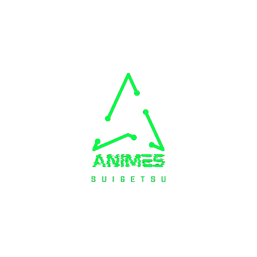

Animes
Suigetsu
Animes
Em lançamento
Top Animes
Legendados
Calendário
Filmes
Legendados
Dublados
Gênero
Açao
Artes Marciais
Aventura
Comédia
Demônios
Drama
Echi
Espaço
Esporte
Fantasia
Ficçao Científica
Harém
Horror
Jogos
Josei
Magia
Mecha
Mistério
Militar
Musical
Paródia
Psicológia
Romance
Seinen
Shoujo-ai
Shounen
Slice of Life
Sobrenatural
Suspense
Superpoder
Vampiros
Vida Escolar
Temporadas
Outono
Inverno
Primavera
Verão
Mais
Pedidos
Sugestôes
Notificações
Regras
Entrar | Cadastrar
Jujutsu Kaisen 2nd Season
score
Sorcery Figth
呪術廻戦
N/A
0 votos
Trailer
Sinopse: Segunda Temporada de Jujutsu Kaisen
Episodios
Jujutsu Kaisen 2nd Season episodio 1
Jujutsu Kaisen 2nd Season episodio 2
Jujutsu Kaisen 2nd Season episodio 3
Jujutsu Kaisen 2nd Season episodio 4
Jujutsu Kaisen 2nd Season episodio 5